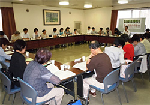

|
|

■議 題
（1）司会、大会アピール提案者、オープニング出演者、大会スローガン、託児の確認と、弁当についての提案を検討し、決定しました。 （2）大会チラシの案について検討し、今後事務局に修正点を連絡して頂くことと、配布の枚数や方法が確認されました。 昨年の大会実績を基に提案し、目標数を目指して参加の呼び掛けをしていくことを確認しました。 大会資料広告の依頼先予定の報告と、各団体の紹介の原稿提出についてお願いしました。 消費者行政充実埼玉会議2012年度全体会の開催と参加のお願いをお伝えしました。 会場の提案と、本日討議する内容について説明し、分科会ごとに分かれて話合いました。 |